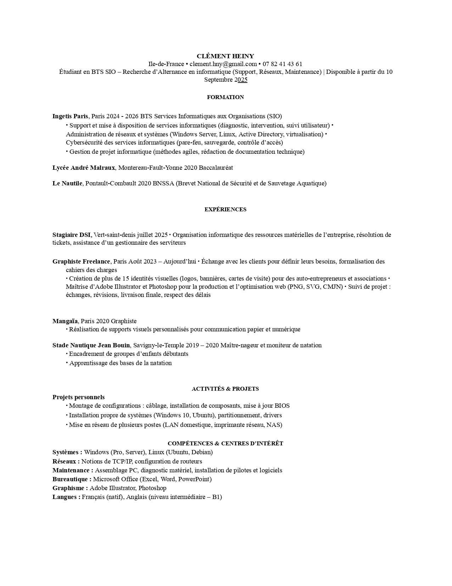
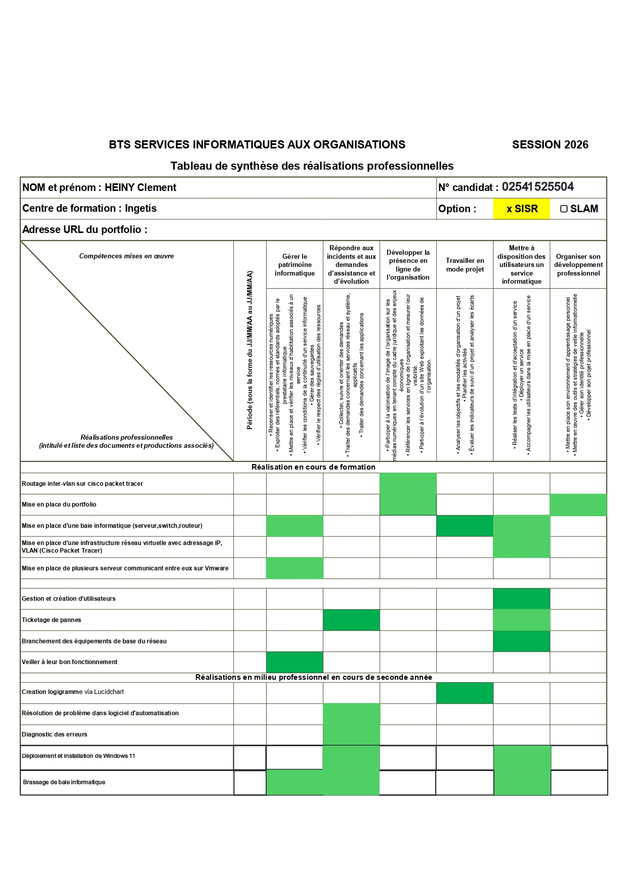

Mon parcours
Clément Heiny
À propos de moi
Je m'appelle Clement HEINY, et je suis actuellement étudiant en deuxième année de BTS SIO (Services Informatiques aux Organisations), option Solutions d'Infrastructure, Systèmes et Réseaux (SISR), au CFA Ingetis.
Passionné par les nouvelles technologies, j'ai choisi cette spécialité pour approfondir mes connaissances et compétences dans la conception, la mise en place et la gestion d'infrastructures réseau et de systèmes informatiques.
Au cours de ma formation, j'ai acquis des compétences techniques solides en administration réseau, en sécurisation des systèmes d'information, ainsi qu'en déploiement de solutions serveur. J'ai également eu l'opportunité de travailler sur des projets concrets lors de stages en entreprise.
Mon objectif professionnel est de devenir administrateur système et réseau, afin de contribuer à la sécurisation et à l'optimisation des systèmes d'information des organisations.
Je suis motivé, curieux, et prêt à relever de nouveaux défis pour parfaire mes compétences et contribuer à l'évolution de l'IT au sein d'une équipe dynamique.
Clement HEINY
Mon CV

Missions professionnelles
Présentation de l'entreprise
JLI International / MyMobility est une entreprise située à Vert Saint Denis spécialisée dans les solutions de mobilité et les services destinés aux professionnels.
Durant mon stage, j'ai occupé un poste d'assistant au sein du service DSI aux côtés de mon supérieur, Luis Jimenez.
Cette expérience m'a permis de découvrir le fonctionnement d'un environnement informatique en entreprise ainsi que la gestion des systèmes, du support technique et de certaines tâches liées aux réseaux et aux outils professionnels.
Missions principales
- Création de logigrammes pour formaliser et visualiser les processus internes, ce qui améliore la documentation et la compréhension des workflows.
- Préparation et déploiement de téléphones professionnels pour les nouveaux collaborateurs, incluant configuration, installation d'applications et sécurité des terminaux.
- Suivi d'un collaborateur en gestion et maintenance du réseau, observation et participation aux interventions sur le réseau, dépannage et gestion des incidents.
- Analyse et résolution de problèmes dans des logiciels d'automatisation (Power Apps), diagnostic des erreurs et proposition de solutions.
- Déploiement et installation de Windows 11 via clé bootable pour les postes de travail.
- Brassage de baie informatique pour maintenance et optimisation des équipements serveurs.
- Ajout et suppression d'utilisateurs sur un Active Directory.
Compétences développées
- Documentation et formalisation de procédures
- Gestion de parc informatique et déploiement d'équipements
- Compréhension des infrastructures réseau et de la maintenance
- Diagnostic et résolution de problèmes techniques
- Travail en équipe et suivi des procédures IT
- Administration système Windows 11 et déploiement via clé bootable
- Gestion des baies informatiques et maintenance physique des serveurs
- Administration Active Directory (ajout/suppression utilisateurs)
- Déploiement et configuration de téléphones professionnels
- Automatisation avec Power Apps et résolution de problèmes logiciels
Épreuve E5 - Parcours de professionnalisation
Présentation de l'épreuve
L'épreuve E5 évalue la capacité à analyser les besoins d'une organisation, à proposer des solutions informatiques adaptées et à mettre en œuvre ces solutions dans un contexte professionnel.
Tableau de compétences E5

E6 - Épreuve de gestion système
Gestion des systèmes d'information
Cette épreuve pratique évalue les compétences dans l'administration, la maintenance et la sécurisation des systèmes d'information et des infrastructures serveur.
Support de Système E6
BTS SIO E6 SYSTEME HEINY CLEMENT
Rapport de Système E6
System
E6 - Épreuve de gestion réseau
Gestion des infrastructures réseau
Cette épreuve pratique évalue les compétences dans la configuration, la gestion et la sécurisation des infrastructures réseau et des équipements de communication.
Support de Réseau E6
BTS SIO E6 RESEAU HEINY CLEMENT
Rapport de Réseau E6
Reseau
Veille Technologique
Sujet de veille technologique
L'évolution des intelligences artificielles génératives : Claude AI
🔹 Présentation du sujet
Dans le cadre de ma veille technologique, j'ai choisi de suivre l'évolution des intelligences artificielles génératives, notamment Claude AI développé par l'entreprise Anthropic.
Ce sujet m'intéresse car les IA prennent une place de plus en plus importante dans le domaine informatique et professionnel. Elles permettent d'automatiser certaines tâches, d'assister les utilisateurs et d'améliorer la productivité dans les entreprises.
🔹 Pourquoi ce sujet ?
J'ai choisi ce sujet car l'intelligence artificielle est aujourd'hui un domaine en pleine évolution.
Les nouvelles IA comme Claude, ChatGPT ou Copilot sont de plus en plus utilisées dans les entreprises, notamment pour l'assistance, l'analyse de données ou l'automatisation.
Outils de veille
YouTube - BenBK
Chaîne YouTube pour suivre les actualités sur l'IA et les technologies émergentes
youtube.com/@BenBKFrAndroid - Anthropic Claude AI
Article détaillé sur Claude AI et ses fonctionnalités
frandroid.com - Claude AIGoogle Alerts
Alertes personnalisées pour suivre les dernières actualités sur l'IA générative
google.fr/alertsBTS SIO
Présentation du BTS SIO
Le BTS Services Informatiques aux Organisations (SIO) est un diplôme de l'enseignement supérieur français de niveau Bac+2, conçu pour former des spécialistes des services informatiques aux organisations, qu'elles soient commerciales, industrielles, de services, ou administratives. Ce diplôme vise à répondre aux besoins croissants des entreprises en matière de gestion de leur système d'information.
Objectifs du BTS SIO
Le BTS SIO a pour objectif de former des techniciens capables de gérer et d'optimiser le système d'information d'une organisation. Les compétences acquises durant la formation permettent aux diplômés de s'adapter aux changements technologiques et organisationnels, d'assurer la maintenance des équipements informatiques, de développer de nouvelles applications, et de sécuriser les systèmes d'information.
Spécialisations
Le BTS SIO propose deux spécialités, permettant de se concentrer sur des compétences spécifiques selon les aspirations professionnelles de chacun :
� Solutions Logicielles et Applications Métiers (SLAM)
Cette spécialité se concentre sur la conception et le développement d'applications, l'intégration de systèmes, la gestion de projets informatiques, et la maintenance de solutions applicatives. Elle vise à former des développeurs d'applications, des analystes programmeurs, ou encore des gestionnaires de bases de données.
🖥️ Solutions d'Infrastructure, Systèmes et Réseaux (SISR)
Cette option se focalise sur l'installation, la configuration, la gestion et la sécurisation des infrastructures réseaux et systèmes. Les diplômés peuvent prétendre à des postes tels que technicien réseau, administrateur systèmes et réseaux, ou consultant en sécurité informatique.
Débouchés Professionnels
Les titulaires d'un BTS SIO peuvent intégrer directement le marché du travail ou poursuivre leurs études, souvent vers une licence professionnelle, un bachelor spécialisé, ou parfois même une école d'ingénieurs. Sur le marché de l'emploi, ils sont prêts à occuper diverses fonctions dans le secteur informatique, telles que :
- Développeur web/mobile
- Administrateur systèmes et réseaux
- Technicien support informatique
- Analyste cyber sécurité
- Gestionnaire de base de données
- Chef de projet IT junior
Poursuite d'Études
Bien que le BTS SIO soit principalement conçu pour une insertion professionnelle rapide, les diplômés ont également la possibilité de poursuivre leurs études, notamment en licences professionnelles dans le domaine de l'informatique, ce qui peut leur permettre de se spécialiser davantage ou d'accéder à des postes d'encadrement à terme.
Contact
Me contacter
N'hésitez pas à me contacter pour toute question professionnelle ou pour discuter d'opportunités de collaboration.